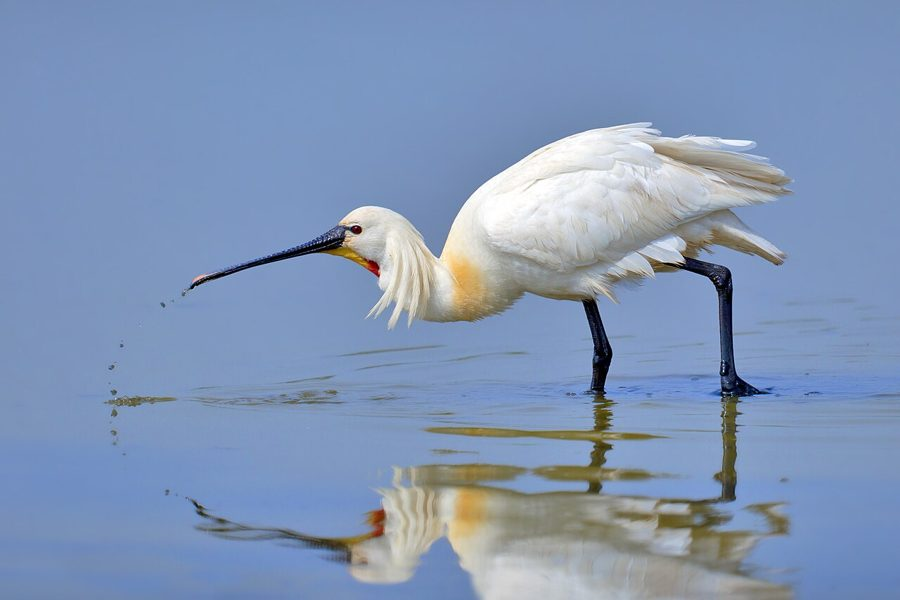

चमचाEurasian Spoonbill
Platalea leucorodia · Threskiornithidae · BRD-0100

- Scientific name वैज्ञानिक नाम
- Platalea leucorodia Linnaeus, 1758
- Family कुल
- Threskiornithidae
- Hindi हिंदी
- चमचा
- Local names स्थानीय नाम
- chamcha, chamcha baza, chamchi, spoonbill
- Status here यहाँ की स्थिति
- native
- Movement आवागमन
- Winter visitor
- IUCN IUCN
- LC
- Review समीक्षा
- audited and independently read
When to look कब देखें
Winter visitor शीतकालीन प्रवासी. Expected mainly in October, November, December, January, February, March, April. मुख्यतः अक्टूबर, नवंबर, दिसंबर, जनवरी, फ़रवरी, मार्च, अप्रैल में अपेक्षित।
Arrives in October–November from breeding grounds in Central Asia and Europe; departs by March–April. Expected along the Ghaghra and Rapti river systems and larger water bodies. All migrants and visitors →
Uses and possibilities उपयोग और संभावनाएँ
Guide: Where the winter birds are: Bakhira, Parvati Arga and the Ayodhya jheels
Drawn from the documented uses in the profile below, where each is labelled traditional, current or a research lead. All uses →
Tell it apart from इनसे अलग पहचानें
चमचा / Eurasian Spoonbill
Platalea leucorodia Linnaeus, 1758 — Threskiornithidae
चमचा — ठंड के मौसम (अक्टूबर से अप्रैल) में मध्य एशिया और यूरोप से आने वाली एक सफेद, लंबी पकड़ की चिड़िया, जिसकी सबसे विलक्षण विशेषता है इसकी चम्मच जैसी चोंच (spatulate bill)। हिंदी नाम "चमचा" इसी विशेषता से आया है। यह उथले पानी में इस चम्मच को आगे-पीछे घुमाते हुए खाना खोजता है। इसके पैर लंबे और काले होते हैं, और इसका पूरा शरीर सफेद होता है। सर्दी में पूर्वी उत्तर प्रदेश की नदियों में यह दिखने वाली सबसे शानदार पक्षी है।
Quick Identification त्वरित पहचान
| Feature | Description |
|---|---|
| Size | Large wading bird; 80–90 cm long |
| Distinctive feature | Enormous spatulate (spoon-shaped) bill — flattened and expanded at tip |
| Plumage | Pure white overall |
| Head | White with yellowish crown patch (breeding season) |
| Legs | Long, black, placed far forward on body |
| **Bill | Pale yellow; enormously enlarged and flattened |
| Behaviour | Walks in shallow water; swings bill side-to-side while feeding |
| Seasonality | Winter visitor only (October–April) |
Field tip: The Eurasian Spoonbill is unmistakable — a pure white wading bird with an enormous, flat, spatulate bill. It is the only bird in the region with this bill shape. Seen in shallow water in winter, walking slowly and swinging its distinctive bill from side to side.
हिंदी — कैसे पहचानें:
बिल्कुल सफेद, लंबी पकड़ वाली चिड़िया।
चम्मच जैसी विशाल चोंच — पहचान तुरंत।
काले लंबे पैर; उथले पानी में चलता है।
सर्दी में ही दिखता है।
Morphology आकारिकी
Biometrics:
| Measurement | Range |
|---|---|
| Total length | 800–900 mm |
| Wing (flattened chord) | 380–410 mm |
| Tail | 110–130 mm |
| Bill | 155–205 mm (extraordinarily long and expanded) |
| Tarsus | 95–110 mm |
| Weight | 1500–2000 g |
Size: 80–90 cm long; wingspan 105–130 cm. Weight 1500–2000 g. Large wading bird, substantially larger than herons of the region.
Plumage: Pure white overall, including all feathers. Breeding birds (in winter wintering grounds) develop yellowish tinge on head and neck (lore area).
Head: White, with pale yellow markings around the eye and on the lore in breeding season.
Bill: The most distinctive feature — enormously enlarged and flattened (spatulate), broadest at the tip. Pale yellow or buff-yellow colour. Highly sensitive to touch, used for tactile feeding in water.
Legs and feet: Long (tarsus 95–110 mm), black, placed far forward on body — adapted for wading in shallow water.
Eyes: Dark; positioned high on head.
Neck: Long and slender; pale yellow in breeding season.
Sexes: Identical in plumage. Females may be slightly smaller.
Juveniles: Duller white; yellowish bill.
Vocalisations. Largely silent. Occasional calls:
- Display call: Soft croaking or grunting during courtship and breeding; frequency 0.5–1.5 kHz.
- Contact call: Quiet honking between pair members.
- Alarm: Sharp clacking of bill.
हिंदी: खामोश पक्षी है। कभी-कभी चोंच से खट-खट की आवाज़ निकालता है।
Behaviour & Ecology व्यवहार और पारिस्थितिकी
Shallow-water forager: Eurasian Spoonbills are specialized tactile feeders. They feed on:
- Small fish
- Aquatic invertebrates (shrimps, crustaceans)
- Aquatic insects and larvae
- Aquatic plants (occasionally)
Feeding technique: Walk slowly through shallow water with the bill held horizontally and partly submerged. Swing the bill from side to side in a rhythmic motion (called "sweeping"), using the expanded tip to sense prey by touch (electrolocation and tactile reception). Snapping the bill closed captures prey.
Social behaviour: Gregarious; form flocks of 10–50 birds in winter. Males and females often forage separately.
Habitat preference: Shallow water bodies — lakes, marshes, and river reaches with shallow margins. Avoid deep water.
Roosting: Communal roosts on open water or mudflats at night.
Flight: Strong, direct fliers; fly in loose formation.
Predators: s, large herons, jackals.
हिंदी: उथले पानी में चोंच को आगे-पीछे हिलाकर खाना खोजता है। झुंड में रहता है। बहुत शांत और सावधान।
Life Cycle / Phenology जीवन चक्र
Winter visitor: Arrives October–November from breeding grounds in Central Asia and southeastern Europe; remains through March; departs by April.
Non-breeding season: Does not breed in eastern UP. Remains in flocks on wintering grounds.
Arrival and departure: First flocks arrive in October; numbers peak in January–February; departure begins March, with most birds gone by April.
Courtship: Pair formation occurs on wintering grounds in winter. Ritualized displays involving synchronized swimming and bill-clattering.
Roosting: Nocturnal roosts on open water; often on mudflats and sandbars.
हिंदी: अक्टूबर में आता है, अप्रैल तक रहता है। सर्दी में जोड़े बनते हैं। बड़ी झीलों पर रात बिताता है।
Host Plants or Prey आहार
| Food Type | Examples | Feeding Behaviour |
|---|---|---|
| Small fish | Fry, juveniles, schooling fish | Sweep in shallow water |
| Aquatic shrimps | Small crustaceans | Tactile sensing with bill |
| Aquatic insects | Larvae, pupae | Sense with bill expansion |
| Aquatic plants | Floating vegetation | Occasional picking |
हिंदी: छोटी मछलियों और जलीय कीड़ों को छानता है। चोंच को पानी में घुमाता है।
Predators / Natural Enemies शत्रु
- Avian predators: s, Marsh Harrier, large herons (for young on breeding grounds)
- Terrestrial predators: Jackals, wild boar (on wintering grounds, mainly egg predation)
- Parasites: Waterfowl helminths
हिंदी: बड़ी शिकारी चिड़ियाँ और भेड़िये इसका शिकार कर सकते हैं।
Agricultural / Human Relevance कृषि प्रासंगिकता
Protected species: Listed in Schedule IV of the Wildlife (Protection) Act 1972, amended 2022. Fully protected; hunting prohibited.
Wetland health indicator: Its presence indicates healthy, shallow wetland ecosystems with diverse invertebrate populations.
Cultural significance: Named चमचा (chamcha, "spoon") in Hindi, directly referencing its distinctive bill shape.
Scientific importance: Migratory patterns are important for understanding Central Asian migration corridors.
uses: [] caution: [protected]
हिंदी: यह विधि अधिनियम 1972 की अनुसूची IV के अंतर्गत संरक्षित है।
Expected Locally स्थानीय रूप से अपेक्षित
This species is NOT a field record. The information below describes where Eurasian Spoonbills should be looked for based on published sources.
Winter range: Expected in eastern Uttar Pradesh from October to April. The Ghaghra and Rapti river systems, particularly their wider reaches and associated floodplain lakes, are prime habitats.
Habitat preference: Shallow water bodies with soft muddy bottoms rich in invertebrate life.
Peak occurrence: January–February, when populations from Central Asian breeding grounds have moved to southern wintering grounds.
Nearest published record: The Ghat Lakes near Balrampur and similar shallow wetlands in the Ghaghra floodplain have been documented as wintering sites by the Zoological Survey of India.
What a first record would be: A dated photograph clearly showing the bird's distinctive spoon-shaped bill and white plumage in a specific location, with GPS and date, submitted through the About page.
हिंदी: अक्टूबर से अप्रैल तक घाघरा और राप्ती नदी के पास बड़े झुंड में देखे जाते हैं। पहला रिकॉर्ड के लिए स्पष्ट फोटोग्राफ और तारीख चाहिए।
Distribution वितरण
Global range: Europe, western and central Asia to Japan. Monotypic species.
In India: Distributed as a winter visitor throughout suitable wetlands, particularly northern and eastern regions.
In Uttar Pradesh: Widespread in winter, particularly in eastern districts along major river systems.
In Basti district / eastern UP: Regular and locally abundant winter visitor along the Ghaghra and Rapti river systems and their associated lakes and marshes.
Research Questions शोध प्रश्न
- What are the exact breeding grounds and migration routes of Eurasian Spoonbills that winter in eastern UP? Do all spoonbills in the region come from the same breeding populations?
- How does the diet composition and foraging efficiency of spoonbills vary with water quality, turbidity, and invertebrate abundance in different wetlands?
- What is the population trend of Eurasian Spoonbills in the Ghaghra-Rapti system over the last 20 years?
- How do spoonbills use tactile and visual sensory systems while feeding, and do they switch between feeding strategies in different water conditions?
- क्या जलाशयों के पानी के स्तर में परिवर्तन से इस चिड़िया की आगमन और प्रस्थान की तारीख में बदलाव होता है?
- What is the impact of wetland degradation, pollution, and water management on spoonbill wintering populations?
Similar Species मिलती-जुलती प्रजातियाँ
| Species | Key Difference | Hindi | Field Rule | |
|---|---|---|---|---|
| [[black_headed_ibis\ | Black-headed Ibis]] (Threskiornis melanocephalus) | Black head and neck; curved bill | काली गर्दन वाली बगुली | Spoonbill is all-white with flat spoon-shaped bill; Ibis has dark head and curved bill. |
| [[asian_openbill\ | Asian Openbill]] (Anastomus oscitans) | Brown plumage; gap in bill; smaller | खुली चोंच बगुली | Spoonbill is white with complete expanded bill; Openbill is brown with gap in bill. |
| [[painted_stork\ | Painted Stork]] (Mycteria leucocephala) | Colourful plumage (pink wings); painted head | रंगीन बगुली | Spoonbill is pure white all over; Stork is colourful. |
| Woolly-necked Stork (Ciconia episcopus) | Black and white plumage; heavier bill | ऊँची टाँगों वाली बगुली | Stork has black back; spoonbill is all-white with distinctive spoon bill. |
Field rule: The Eurasian Spoonbill is unmistakable — the only winter wading bird in the region with a pure white body and an enormously enlarged, flattened, spoon-shaped bill. No other bird has this bill shape.
Taxonomy & Classification वर्गीकरण
Original description. Described by Carl Linnaeus in 1758 in Systema Naturae, 10th edition, volume 1, page 140. Type locality is Europe.
Subspecies. Monotypic — Platalea leucorodia leucorodia. No subspecies are currently recognised, though some populations show minor geographic variation.
Family and order placement. Order Pelecaniformes; family Threskiornithidae (ibises and spoonbills). The genus Platalea contains six spoonbill species worldwide; P. leucorodia is the largest.
Phylogenetic notes. Molecular studies confirm Platalea as a distinct genus within Threskiornithidae, closely related to ibises but with highly specialized bill morphology.
IUCN status rationale. Least Concern globally. Populations are stable and widespread in suitable habitats. The species is protected under the Wildlife Protection Act 1972 (Schedule IV) in India and is not threatened.
हिंदी: यह विश्वभर में कई स्थानों पर पाया जाता है। भारत में सर्दियों में आता है। पूरी तरह सुरक्षित है।
Photo Gallery फोटो गैलरी
No photos yet — add field photos to media/species/eurasian_spoonbill/ and run node scripts/sync_photos.js.
Wanted photos:
- Large spoon-shaped bill in detail
- Feeding in shallow water (sweeping motion)
- Entire white plumage profile
- Flock in flight
- Roosting on mudflats
- Pair in courtship (if available in winter)
References संदर्भ
- Linnaeus, C. (1758). Systema Naturae per Regna Tria Naturae (10th edn). Laurentii Salvii, Holmiae. Vol. 1, p. 140.
- Ali, S. & Ripley, S. D. (1968). Handbook of the Birds of India and Pakistan. Vol. 1. Oxford University Press, Delhi. Pp. 266–268.
- Cramp, S. & Simmons, K. E. L. (1977). Handbook of the Birds of Europe, the Middle East and North Africa. Vol. 1. Oxford University Press. Pp. 489–510.
- Zhukov, A. V., & Kuzmin, S. L. (2005). Feeding ecology of Eurasian Spoonbill (Platalea leucorodia) in the Mologa floodplain. Russian Journal of Ornithology 14: 234–242.
- GBIF Occurrence Data — Platalea leucorodia, India. GBIF taxon key: to be filled.
- IUCN Red List (2023). Platalea leucorodia — BirdLife International assessment. Status: Least Concern.
Source file: species/fauna/birds/eurasian_spoonbill.md